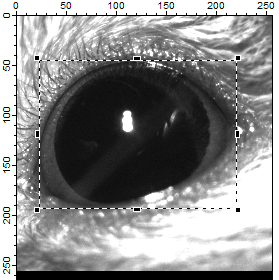
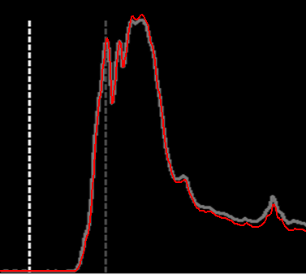

EyelidTracker
Test #3
This video was recorded after the mouse was trained.
Source
TrainedCR.avi (Trained Conditioned Response, generously provided by Dr. Javier Medina
in the University of Pennsylvania.)
Video during Analysis
Grayscale Image and ROI

Thresholding (threshold = 87)
Compare Results
- White dashed line: CS
- Dark red dashed line: US
- Gray trace: Eyelid position quantified by Dr. Javier Medina's lab
- Red trace: Eyelid position quantified by EyelidTracker
